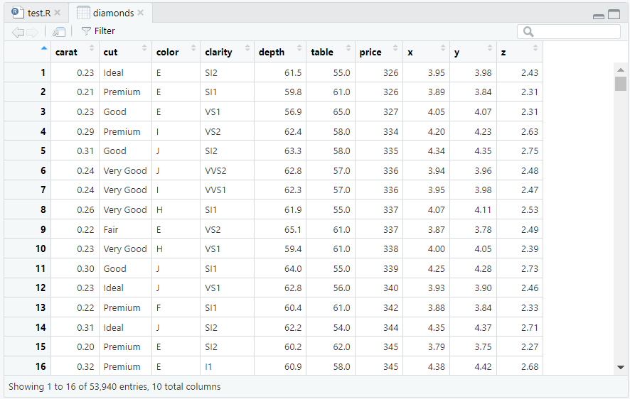
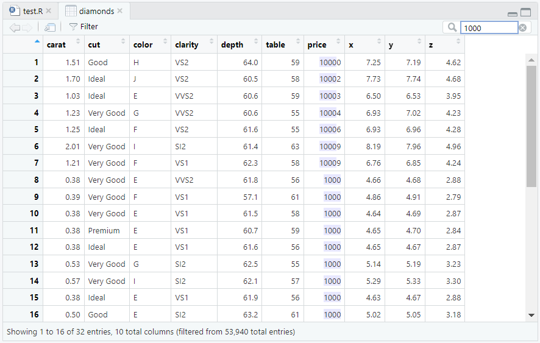
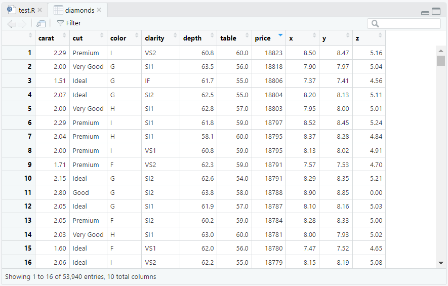

1 + 1[1] 2print(1 + 1)[1] 2print() 展示数据的前面几列、前面几行s_print() 展示数据的前面几列、首尾几行glimpse() 展示数据每一列的前面几行view() 打开类似 Excel 的界面，查看整个数据的表格names() 和 names_as_column() 浏览变量名codebook() 查看变量标签和概要print()当你键入一个对象，而不对它进行任何操作时，R 会自动帮你套上一个 print() 函数。请看下面的例子：
1 + 1[1] 2print(1 + 1)[1] 2同理，我们阅读 diamonds 的时候，其实是看它打印出来的样子：
library(tidyverse)
diamonds# A tibble: 53,940 × 10
carat cut color clarity depth table price x y z
<dbl> <ord> <ord> <ord> <dbl> <dbl> <int> <dbl> <dbl> <dbl>
1 0.23 Ideal E SI2 61.5 55 326 3.95 3.98 2.43
2 0.21 Premium E SI1 59.8 61 326 3.89 3.84 2.31
3 0.23 Good E VS1 56.9 65 327 4.05 4.07 2.31
4 0.29 Premium I VS2 62.4 58 334 4.2 4.23 2.63
5 0.31 Good J SI2 63.3 58 335 4.34 4.35 2.75
6 0.24 Very Good J VVS2 62.8 57 336 3.94 3.96 2.48
7 0.24 Very Good I VVS1 62.3 57 336 3.95 3.98 2.47
8 0.26 Very Good H SI1 61.9 55 337 4.07 4.11 2.53
9 0.22 Fair E VS2 65.1 61 337 3.87 3.78 2.49
10 0.23 Very Good H VS1 59.4 61 338 4 4.05 2.39
# ℹ 53,930 more rowsprint(diamonds)# A tibble: 53,940 × 10
carat cut color clarity depth table price x y z
<dbl> <ord> <ord> <ord> <dbl> <dbl> <int> <dbl> <dbl> <dbl>
1 0.23 Ideal E SI2 61.5 55 326 3.95 3.98 2.43
2 0.21 Premium E SI1 59.8 61 326 3.89 3.84 2.31
3 0.23 Good E VS1 56.9 65 327 4.05 4.07 2.31
4 0.29 Premium I VS2 62.4 58 334 4.2 4.23 2.63
5 0.31 Good J SI2 63.3 58 335 4.34 4.35 2.75
6 0.24 Very Good J VVS2 62.8 57 336 3.94 3.96 2.48
7 0.24 Very Good I VVS1 62.3 57 336 3.95 3.98 2.47
8 0.26 Very Good H SI1 61.9 55 337 4.07 4.11 2.53
9 0.22 Fair E VS2 65.1 61 337 3.87 3.78 2.49
10 0.23 Very Good H VS1 59.4 61 338 4 4.05 2.39
# ℹ 53,930 more rows所以，我们通常不会主动使用 print()。但是，我们在很多时候用到了这个函数。
我们还可以用 statart 包的 sprint() 函数，它可以打印一个数据的开头几行和结尾几行：
library(statart)
s_print(diamonds)# A tibble: 53940 × 10
carat cut color clarity depth table price x y z
<dbl> <ord> <ord> <ord> <dbl> <dbl> <int> <dbl> <dbl> <dbl>
1 0.23 Ideal E SI2 61.5 55 326 3.95 3.98 2.43
2 0.21 Premium E SI1 59.8 61 326 3.89 3.84 2.31
3 0.23 Good E VS1 56.9 65 327 4.05 4.07 2.31
4 0.29 Premium I VS2 62.4 58 334 4.2 4.23 2.63
5 0.31 Good J SI2 63.3 58 335 4.34 4.35 2.75
53936 0.72 Ideal D SI1 60.8 57 2757 5.75 5.76 3.5
53937 0.72 Good D SI1 63.1 55 2757 5.69 5.75 3.61
53938 0.7 Very Good D SI1 62.8 60 2757 5.66 5.68 3.56
53939 0.86 Premium H SI2 61 58 2757 6.15 6.12 3.74
53940 0.75 Ideal D SI2 62.2 55 2757 5.83 5.87 3.64
# ℹ 53930 more rows in the middle
# ℹ Use `s_print(n = ...)` to see more rowss_print(diamonds, n = 10)# A tibble: 53940 × 10
carat cut color clarity depth table price x y z
<dbl> <ord> <ord> <ord> <dbl> <dbl> <int> <dbl> <dbl> <dbl>
1 0.23 Ideal E SI2 61.5 55 326 3.95 3.98 2.43
2 0.21 Premium E SI1 59.8 61 326 3.89 3.84 2.31
3 0.23 Good E VS1 56.9 65 327 4.05 4.07 2.31
4 0.29 Premium I VS2 62.4 58 334 4.2 4.23 2.63
5 0.31 Good J SI2 63.3 58 335 4.34 4.35 2.75
6 0.24 Very Good J VVS2 62.8 57 336 3.94 3.96 2.48
7 0.24 Very Good I VVS1 62.3 57 336 3.95 3.98 2.47
8 0.26 Very Good H SI1 61.9 55 337 4.07 4.11 2.53
9 0.22 Fair E VS2 65.1 61 337 3.87 3.78 2.49
10 0.23 Very Good H VS1 59.4 61 338 4 4.05 2.39
53931 0.71 Premium E SI1 60.5 55 2756 5.79 5.74 3.49
53932 0.71 Premium F SI1 59.8 62 2756 5.74 5.73 3.43
53933 0.7 Very Good E VS2 60.5 59 2757 5.71 5.76 3.47
53934 0.7 Very Good E VS2 61.2 59 2757 5.69 5.72 3.49
53935 0.72 Premium D SI1 62.7 59 2757 5.69 5.73 3.58
53936 0.72 Ideal D SI1 60.8 57 2757 5.75 5.76 3.5
53937 0.72 Good D SI1 63.1 55 2757 5.69 5.75 3.61
53938 0.7 Very Good D SI1 62.8 60 2757 5.66 5.68 3.56
53939 0.86 Premium H SI2 61 58 2757 6.15 6.12 3.74
53940 0.75 Ideal D SI2 62.2 55 2757 5.83 5.87 3.64
# ℹ 53920 more rows in the middle
# ℹ Use `s_print(n = ...)` to see more rowsnames()library(tidyverse)
# 罗列变量名
names(diamonds) [1] "carat" "cut" "color" "clarity" "depth" "table" "price"
[8] "x" "y" "z" glimpse()# 浏览变量列表，以及开头的若干个案
glimpse(diamonds)Rows: 53,940
Columns: 10
$ carat <dbl> 0.23, 0.21, 0.23, 0.29, 0.31, 0.24, 0.24, 0.26, 0.22, 0.23, 0.…
$ cut <ord> Ideal, Premium, Good, Premium, Good, Very Good, Very Good, Ver…
$ color <ord> E, E, E, I, J, J, I, H, E, H, J, J, F, J, E, E, I, J, J, J, I,…
$ clarity <ord> SI2, SI1, VS1, VS2, SI2, VVS2, VVS1, SI1, VS2, VS1, SI1, VS1, …
$ depth <dbl> 61.5, 59.8, 56.9, 62.4, 63.3, 62.8, 62.3, 61.9, 65.1, 59.4, 64…
$ table <dbl> 55, 61, 65, 58, 58, 57, 57, 55, 61, 61, 55, 56, 61, 54, 62, 58…
$ price <int> 326, 326, 327, 334, 335, 336, 336, 337, 337, 338, 339, 340, 34…
$ x <dbl> 3.95, 3.89, 4.05, 4.20, 4.34, 3.94, 3.95, 4.07, 3.87, 4.00, 4.…
$ y <dbl> 3.98, 3.84, 4.07, 4.23, 4.35, 3.96, 3.98, 4.11, 3.78, 4.05, 4.…
$ z <dbl> 2.43, 2.31, 2.31, 2.63, 2.75, 2.48, 2.47, 2.53, 2.49, 2.39, 2.…view()# 打开 Excel 式的数据表
view(diamonds)这里因为条件的限制无法演示，就在下面贴一些截图吧。大家可以在自己的 RStudio 里面运行代码，尝试一下。



codebook()library(statart)
# 查看变量基本信息
codebook(diamonds)# A tibble: 10 × 4
variable type n unique
<chr> <chr> <int> <int>
1 carat double 53940 273
2 cut ord 53940 5
3 color ord 53940 7
4 clarity ord 53940 8
5 depth double 53940 184
6 table double 53940 127
7 price integer 53940 11602
8 x double 53940 554
9 y double 53940 552
10 z double 53940 375